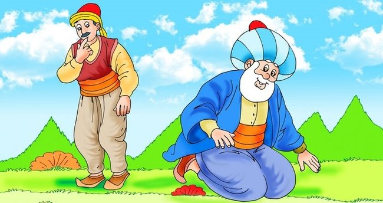

Parayı Veren Düdüğü Çalar
Çocuklar, pazara gelen Nasreddin Hoca'nın etrafını sarmış.
“Hoca, bana düdük al!” demiş biri. “Bana da, bana da!”
demiş bir diğeri.
Diğerleri de sırayla:
- Ben de düdük isterim!
- Bir tane de bana!, demişler.
İçlerinden sadece biri Nasreddin Hoca’ya düdük parası vermiş.
Hoca, parayı alıp pazara gitmiş.
Hoca, akşam pazardan dönünce çocuklar etrafını sarmış.
Her biri düdüğünü istemiş. Cebinden bir düdük çıkaran hoca,
parayı veren çocuğa vermiş.
Diğer çocuklar hep bir ağızdan bağırmış:
Nasrettin Hoca gülerek,
- Parayı veren düdüğü çalar, demiş.

Ya Tutarsa!

Nasreddin Hoca bir gün gölün kıyısına gider.
Elinde koca bir kaşık yoğurdu da yanına almış.
Nasreddin Hoca, kaşığındaki yoğurdu göle sokmuş ve
yoğurdu göle boşaltmış.
O sırada köylülerden biri onu görmüş ve şaşkınlıkla:
- Hoca ne yapıyorsun, diye sormuş.
Hoca gülümseyerek:
- Gölü mayalıyorum, ne yapayım, demiş.
Adam, Hoca’ya bakmış ve kahkaha atarak:
- Ne diyorsun be Hoca, çıldırmış olmalısın.
Koskoca göl hiç maya tutar mı?, demiş.
Hoca gülümsemesini hiç bozmadan:
- Peki ama ya tutarsa, demiş.